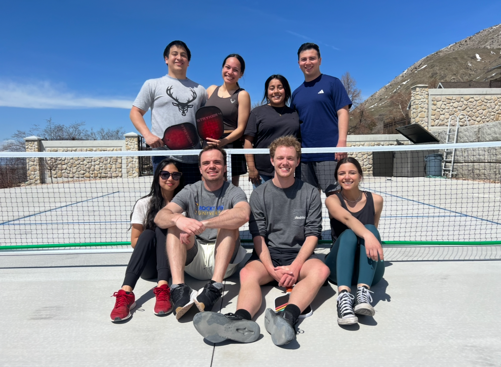

Pickleball fascinates me because it mixes quick reflexes, smart shot placement, and a fun community atmosphere. It is easy to learn, but every game still feels competitive and enjoyable.

The court is smaller than a tennis court, so rallies happen quickly and teamwork matters a lot in doubles. It feels competitive without being intimidating, which is one reason so many people get hooked.
I also like that improvement comes from both movement and decision-making. You do not just hit harder. You learn when to dink, when to reset, and when to attack.
Here is a 5 minute tutorial on how to play pickleball.
My favorite part is trying to slice the ball and still staying inside the court. Soft shots can be just as important as powerful ones, and small angles can completely change the game.
Pickleball also works well as a social hobby because games rotate quickly. That makes it easy to meet people and keep learning from different playing styles.
If I were helping a new player improve, I would focus on consistent serves, returns deep to the baseline, and patient dinking. Those three skills make the game more manageable on the get go.
Once those basics feel comfortable, the next step is learning how to move with a doubles partner and cover the court as a team.
This YouTube video gives a quick look at the basics.